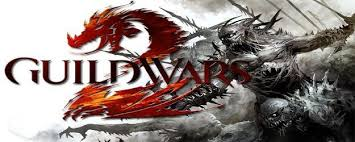
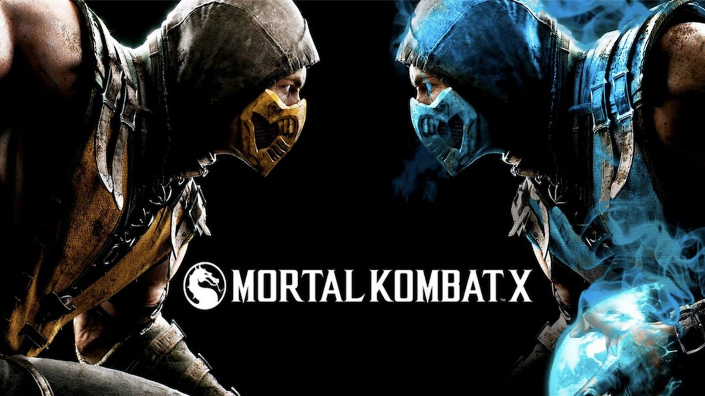

Guild Wars 2

Guild Wars 2, es el nombre oficial de la secuela del videojuego de rol multijugador Guild Wars, desarrollado por ArenaNet, filial de NCsoft.
La historia empezará 250 años después de la última expansión de la primera parte, Eye of the North.
Los personajes de Guild Wars no se podrán transferir a Guild Wars 2, pero sí los títulos conseguidos y se reservarán los nombres de los personajes de aquellas cuentas vinculadas a la página de NCsoft.
Además se podrán conseguir títulos y objetos completando el "Hall of Monuments" (Museo de monumentos) de Guild Wars, aunque estos objetos no darán ninguna ventaja respecto a los nuevos jugadores, ya que tendrán una finalidad meramente estética. No habrá esbirros (ni tampoco héroes) como en la entrega anterior.
| Requisitos |
|
Mínimos |
<
| CPU |
Intel® Core™ 2 Duo a 2,0 GHz, Core i3, AMD Athlon™ 64 X2 o superior |
| RAM |
2GB |
| SO |
Windows® XP Service Pack 2 o superior |
| Tarjeta gráfica |
NVIDIA® GeForce® 7800, ATI Radeon™ X1800, Intel HD 3000 o superior (256 MB de VRAM y shader model 3.0 o superior) |
| Disco Duro (Espacio libre) |
25GB |
PlayerUnknown's Battlegrounds

PlayerUnknown's Battlegrounds (Estilizado como PUBG) es un videojuego de batalla en línea multijugador
masivo desarrollado por Brendan Greene y publicado por Bluehole para Microsoft Windows, Xbox One,
PlayStation 4, Android e iOS.
El juego era una beta battle-royale de ARMA 3 que salió en 2015.El juego se basa en el estilo Battle
Royale de los mods previamente desarrollado por Brendan "PlayerUnknown" Greene para otros juegos, pero
ampliado independientemente bajo la dirección creativa de él mismo.
En el juego, hasta cien jugadores saltan en paracaídas desde un avión a una isla, donde tienen la
libertad de moverse hacia un lugar determinado que ellos mismo elijan y buscan armas y equipamiento para
matar a otros jugadores mientras evitan ser asesinados.
El área segura disponible del mundo del juego disminuye en tamaño durante la partida, dirigiendo a los
jugadores sobrevivientes a áreas más reducidas y forzando enfrentamientos. El último jugador o equipo en
pie gana la partida.
El juego fue lanzado en Windows mediante el programa de acceso anticipado de Steam en marzo de 2017.
Mientras que en el acceso anticipado, el juego había vendido más de cuatro millones de copias en un
plazo de tres meses.
Bluehole planea lanzamientos de consolas después de la versión completa de la versión de Windows, con
una versión de Xbox One prevista para ser una exclusiva programada para finales de 2017.
Una versión para dispositivos móviles iOS y Android fue lanzada el 20 de marzo de 2018 en la App Store y
la Play Store. El videojuego se lanzó en la consola PlayStation 4 el 7 de diciembre de 2018.
| Requisitos |
|
Mínimos |
| CPU |
Intel Core i3-4340 o AMD FX-6300 |
| RAM |
6GB |
| SO |
64-bit Windows 10, Windows 8.1, Windows 7 |
| Tarjeta gráfica |
NVidia GeForce GTX 660 2GB / AMD Radeon HD 7850 2GB |
| Disco Duro (Espacio libre) |
30GB |
Mortal Kombat X

Mortal Kombat X (abreviado MKX) es un videojuego de pelea creado por Ed Boon, desarrollado por
NetherRealm Studios y publicado por Warner Bros. Interactive Entertainment, fue anunciado en junio de
2014, mediante un vídeo que mostraba a Sub-Zero y Scorpion peleando entre sí.
Está disponible para PlayStation 4, Xbox One y Microsoft Windows desde el 14 de abril de 2015; para iOS
desde el 7 de abril de 2015 y para el Android desde el 21 de abril de 2015. El eslogan oficial es:
"Who's next?" (lit. ¿Quién es el siguiente?). Es el décimo videojuego de la serie, sin contar
expansiones, crossovers y juegos de aventura.
El juego también se encontraba en desarrollo para las consolas Xbox 360 y PlayStation 3, pero su
desarrollo fue eventualmente cancelado por NetherRealm.
| Requisitos |
|
Mínimos |
Recomendados |
| CPU |
Intel Core i5-750, 2.67 GHz | AMD Phenom II X4 965, 3.4 GHz |
Intel Core i7-3770, 3.4 GHz | AMD FX-8350, 4.0 GHz |
| RAM |
3GB |
8GB |
| SO |
Windows 10 (64-bit) / Windows 8.1 (64-bit) / Windows 8 (64-bit) / Windows 7 (64-bit)
|
| Tarjeta gráfica |
NVIDIA GeForce GTX 460 | AMD Radeon HD 5850 |
NVIDIA GeForce GTX 660 | AMD Radeon HD 7950 |
| Disco Duro (Espacio libre) |
40GB |